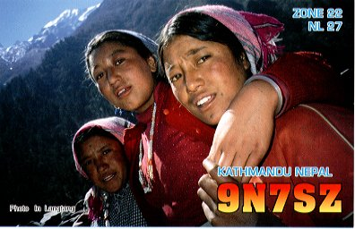
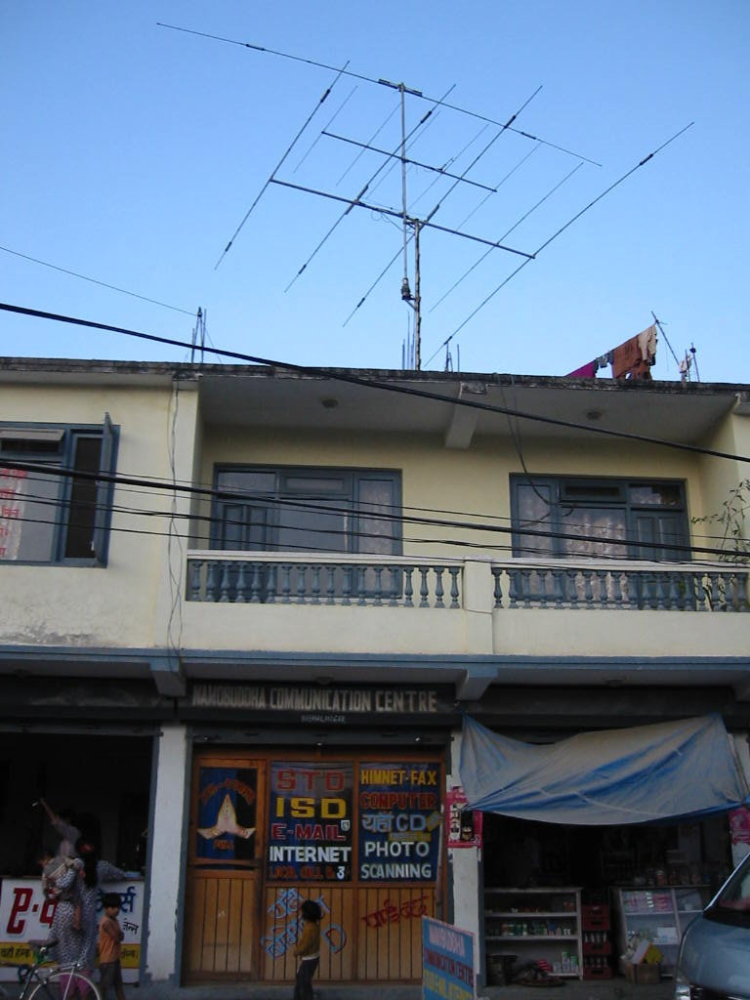
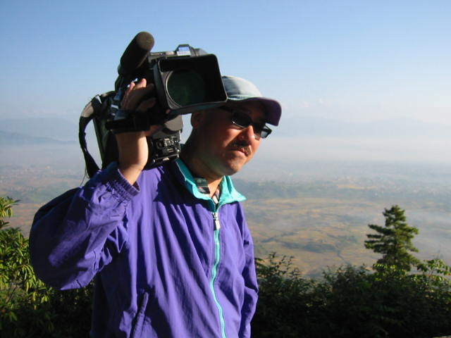

NepalからQRVしている9N7SZ(OP・JA9LSZ 八原さん)
|
◎ ～ またまた ネパールで聞いた6m ～ [JA9LSZ／9N7SZ・八原] ○ 10月29日(火) EUがOPEN!! 1300z（時間表示はすべてUTC、ネパールと日本時間の差は3時間15分、従ってネパール時間は18時45分） BANDをワッチするとBuzzだらけ、SSBでCQを出すとYO9HPから呼ばれる！これはEUのBig OPENか！？ と期待したが全く空振りでVR2とA45WD/A45XRから呼ばれる程度。 後で調べるとYO9HPはA45WDと同一人物のようで、どうもYOのCallを使ってA4から呼んだのではなかろうか？。 このあとは1315z、IT9RZRから呼ばれる。SSBで呼んできたが弱かったのでCWにQSYしてQSO。 599/559だったが彼はBeamをどこに向けても聞こえていた。 VK4CP/6とその後QSO、1341zにはSV1DHが聞こえるが呼べど叫べど応答無し。（これはJAでも同じかHi） しばらく30mで時間をつぶして再び1433zに6mへ、FR1GZがメチャ強力！続いて5B4FL、 5B4AGMとQSOしてこの日は終わり。 トータル14 QSO（YO？/VR2/A4/IT9/VK/FR/5B 7Entity）
○ 11月１日(金) やっと聞こえたー沖縄
|

|
○ 11月２日(土) JA Big OPEN!!! 春のCONDXの再来か！？ 土曜日ということもあり、今日はJAも一杯ワッチしているのでは？と期待して早めにワッチ開始。 0825z JM1IGJ/6を皮切りに立て続けに沖縄方面28局とQSO!。 沖縄をやり尽くし呼ばれなくなってきたのでBeamを南南東に大きく振りCQを連発。 20分ほど出し続けていたら0908z JJ3AZA/1から呼ばれる！。 そのあとはご想像通り、JAの大Pile。今回のScatterは東日本がよかったようで1/７/φからのCallが多い。 Scatterとは言えPeakでは本当に599を振ってくるほどCONDXはよかった。 仕事開始のギリギリ1145z JH1XYR/6とのQSOを最後に無念のQRT。 今日のQSOでは何回Callを打っても応答しない局多数。あとで調べるとXV9DTが同じ周波数に出ていたとか。 さらに、こちらの信号が弱いせいか、UP50KHzを指定しても全然わかってもらえず結局1～４KHzUPをとる事になってしまった。 自分のQRVしていたのが50.105だったのでUPが50.110になるのはできれば避けたかったのだが...。 なかなか思うようにはいかないのであった。でも今日は8N1OGAができた。 トータル 148 QSO (JA/VK4/VR2/BY7/JD1O/KG6 6 Entity) JA=139 内訳はJA1=58、JA2=17、JA3=7、JA4=2、JA6=36、JA7=11、JA9=2、JAφ=6
○ 11月3日(日) やはり２匹目のどじょうはいないのだった。
○ 11月5日(火) 1局のみ！
○ 11月7日（木）仕事が忙しくわずかなQRVのみ。
○ 11月9日（土）神は6mを見捨てていなかった！
今回のQRVでのトータルQSO(6m) 241 QSO(うちJAは191 QSO) ＊ CONDXは思ったほど悪くはなかったようだ。 しかし、EUと東南アジアがShort PathでOPENしている状態でも9NからEUは全く聞こえず。 ワッチする時間はもっと遅くか、もしくは早いほうがよかったのかも知れない。 個人的にはEUのOPENが楽しみだっただけに残念である。 ＊ 中東方面はA45XR/A45WDが大変Activeでいいパイロットになった。 また、JA方面はVR2のOPENが参考になったが、48/49MHz台の信号はよく聞こえていることが多く、 どこかOPENしていることが多いようだ。 南北のPathで簡単にQSO出来そうなVU、8Q、4S、VQ9の信号は１度も聞くことはできなかった。 ＊ 2000年春に出来なかったEUやFR、VK4（前回はVK6/8のみ、僅か9 Entity）までQSO出来ていることから考えても、 今回の秋のほうが伝搬状態は良かったようだ。 問題はQRVする時間が短かったことにあり、前回のようにフルに運用出来れば6mでのQSO総数は500を軽く？超えるものとなったのでないか？ また、過去の実績等から考慮するとまだ来春も9N～JAとのOPENの可能性は結構ありそうである。 出来ればどなたかQRVして私とQSOしていただきたいものである。Hi ＊ 今回もJA8MWU/9N7WUのシャックをお借りし、連日ホテルからこの無線機のあるシャックまで通いました。 (IC-746＋5ELE 八木を使用）いつも快くこの無線室を貸していただいた阿部さんには感謝です。 今秋も6mを楽しませて頂きありがとうございました。(9N7SZ/JA9LSZ・八原)
|

今回撮影した番組は2002年12月8日(日)午前11:30～11:54に放送されました。
NHK総合TV 「アジア人間街道」 ～アニタさんの乗合三輪～